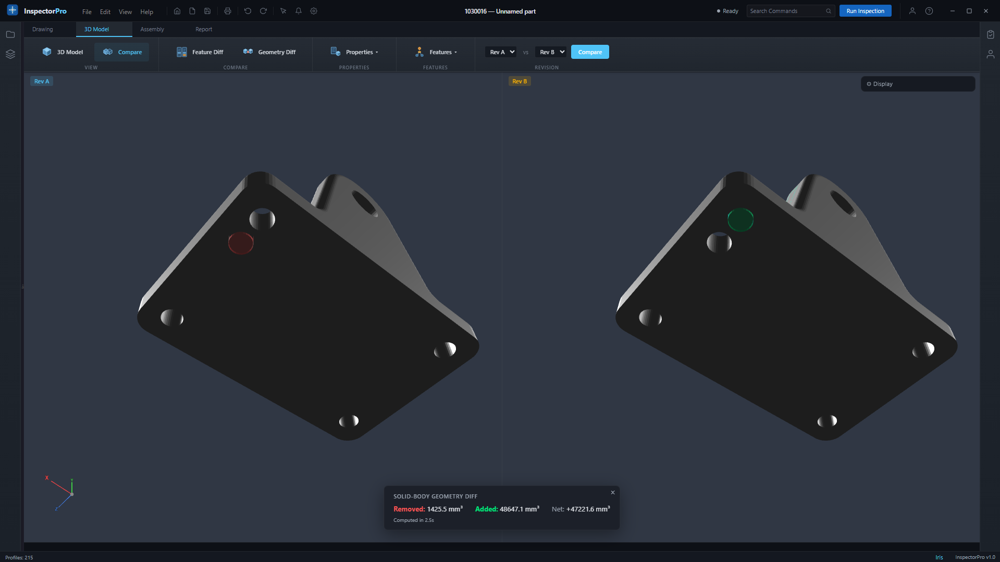
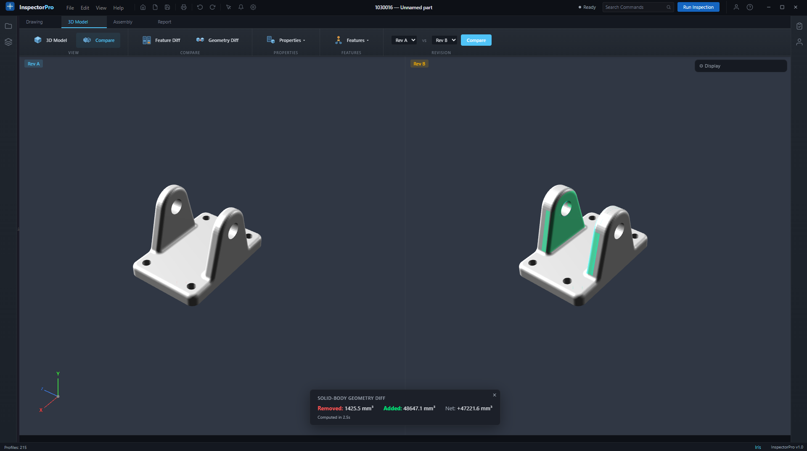

NEW
Feature diff tells you
what
changed.
Geometry diff shows
where
.
Material added or removed is highlighted directly on the 3D model.
Hole relocated
Old position filled, new position cut

Lug thickened
48,647 mm³ of added material highlighted
